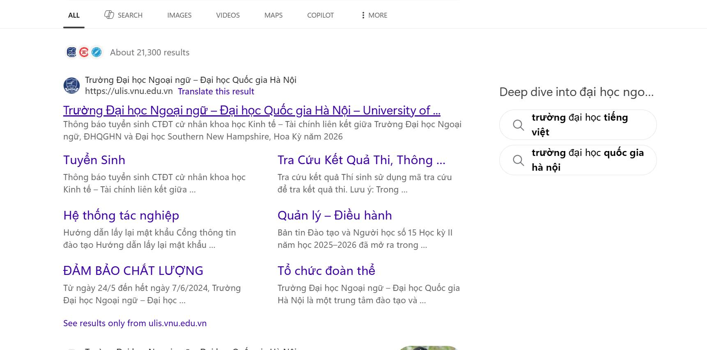
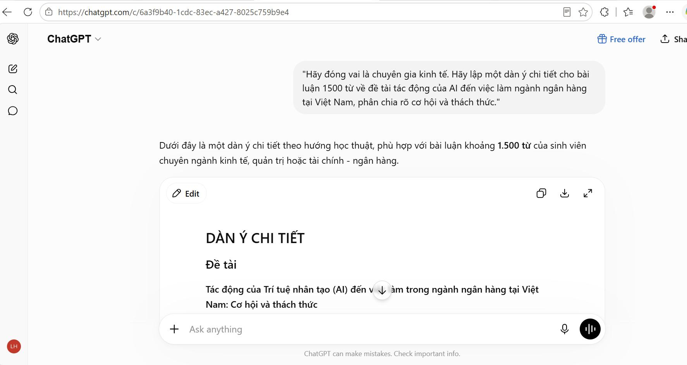
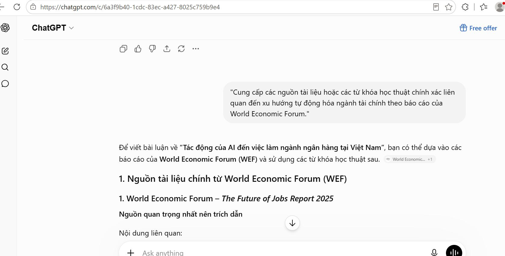
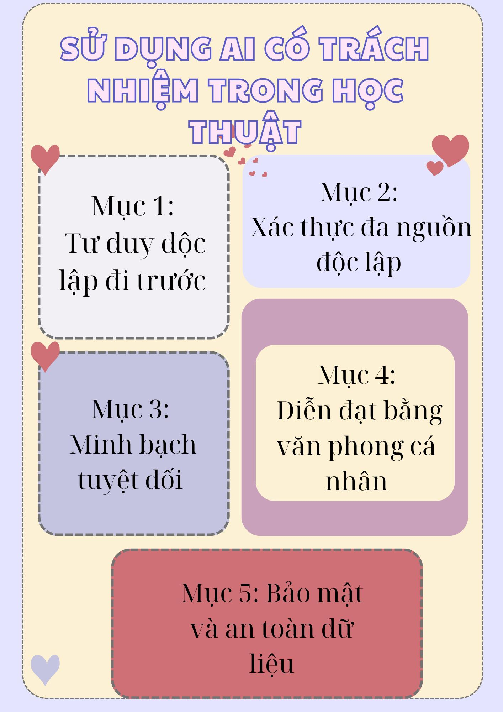

AI CÓ TRÁCH NHIỆM
Trục nội dung chính
Bài 6 xoay quanh việc tìm hiểu chính sách, dùng AI cho một nhiệm vụ học tập, phân tích khía cạnh đạo đức và đề xuất bộ nguyên tắc cá nhân. Phần trình bày được tổ chức lại để kết nối trực tiếp giữa lập luận và ảnh minh chứng.
Nghiên cứu chính sách
Tìm hiểu quy định hoặc hướng dẫn liên quan đến việc sử dụng AI trong học tập và nghiên cứu.
Thực hiện nhiệm vụ với AI
Ghi lại prompt, đầu ra và cách chỉnh sửa kết quả từ AI.
Phân tích đạo đức
Làm rõ ranh giới giữa hỗ trợ hợp lý và gian lận học thuật.
Infographic tổng hợp
Chuyển nội dung thành sản phẩm trực quan ngắn gọn, dễ hiểu.
MINH CHỨNG THEO TIẾN TRÌNH
Quá trình thực hiện
Tìm nguồn chính sách và tài liệu nền
Ảnh đầu tiên thể hiện quá trình tìm nguồn thông tin liên quan đến việc sử dụng AI trong môi trường học thuật.

Dùng AI để hỗ trợ nhiệm vụ học tập
Minh chứng tiếp theo cho thấy việc đặt prompt và nhận đầu ra từ AI để phục vụ một nhiệm vụ học tập cụ thể.

Đánh giá và chỉnh sửa đầu ra
Ảnh kế tiếp phản ánh việc xem xét lại câu trả lời của AI, bổ sung dẫn chứng và điều chỉnh nội dung để phù hợp với yêu cầu học thuật.

Hoàn thiện infographic
Ảnh cuối là sản phẩm infographic tóm tắt những nguyên tắc cốt lõi về việc sử dụng AI có trách nhiệm trong học thuật.

BỘ NGUYÊN TẮC CÁ NHÂN
Nguyên tắc sử dụng AI có trách nhiệm
Minh bạch
Luôn ghi rõ khi có sử dụng AI hỗ trợ trong quá trình học tập.
Kiểm chứng
Không sao chép nguyên văn đầu ra; phải kiểm tra, đối chiếu và chỉnh sửa.
Tôn trọng bản quyền
Trích dẫn nguồn, tránh lấy ý tưởng hoặc nội dung mà không ghi nhận.
Giữ vai trò chủ động
AI chỉ là công cụ hỗ trợ; người học vẫn là người chịu trách nhiệm cho sản phẩm cuối cùng.
Sử dụng đúng mục đích
Chỉ dùng AI để hỗ trợ học tập, tư duy và sáng tạo, không dùng để gian lận.